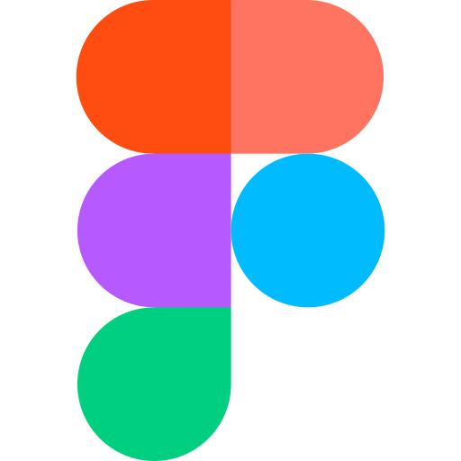

Sobre mí
Desarrollador de software en formación y estudiante de Ingeniería en Sistemas. Combino la lógica técnica del código con la creatividad del diseño. Tengo experiencia desarrollando aplicaciones y sistemas prácticos utilizando tecnologías como Java, C#, y entornos de bases de datos relacionales.
Fuera de la pantalla, soy un firme creyente de que la disciplina se cultiva en todos los aspectos de la vida. Aplico la filosofía estoica en mi día a día, lo que me ayuda a mantener el enfoque, la resiliencia y la calma bajo presión. En mis tiempos libres, canalizo mi enfoque a través del deporte, las artes visuales y los desafíos de lógica. Considero que la constancia que se necesita para escribir un código limpio es la misma que se requiere para dominar cualquier otra habilidad en la vida.
Educación
Ingeniería en Ciencias de la Computación
Universidad Católica de Honduras (UNICAH) | 2023 - Presente
- Estado: Último año en curso.
- Enfoque destacado: Desarrollo de software y web, gestión de bases de datos y técnico de IT
Bachillerato Técnico Profesional en Informática
Instituto Alfonso Guillén Zelaya | Tegucigalpa, Honduras
- Graduado en 2022 con honores.
Certificaciones y Cursos
- CCNA: Introducción a las Redes
- Fundamentos de Python
- Fundamentos de Linux
Habilidades
Habilidades Técnicas
- Lenguajes de Programación:
- Desarrollo Web y Diseño UI/UX:



- Bases de Datos y Análisis de Datos:


- Herramientas de Control de Versiones:

Redes y Soporte Técnico (Hardware)
- Infraestructura de Redes: Configuración, conexión y direccionamiento de redes de datos (CCNA).
- Soporte Técnico de Hardware: Mantenimiento preventivo y correctivo de computadoras.
- Diagnóstico de Sistemas: Detección, aislamiento y resolución de problemas de hardware y software.
Herramientas de Creación Digital
- Edición y Diseño Multimedia: Adobe Photoshop, Filmora X.
Proyectos
SuperMerk
Aplicación de escritorio para la gestión de inventarios y ventas de un supermercado, desarrollada en C# con una interfaz gráfica intuitiva.
Rotary International
Pagina Web para la organización sin fines de lucro Rotary International